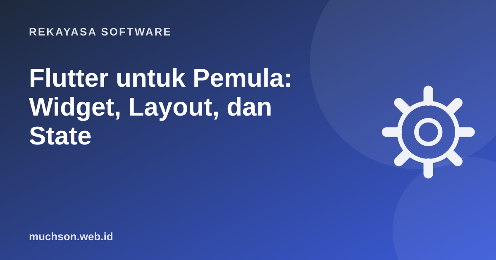

Beranda › Artikel › Rekayasa Software
Rekayasa SoftwareFlutter untuk Pemula: Widget, Layout, dan State
Flutter memungkinkan satu kode Dart menjadi aplikasi Android, iOS, web, dan desktop. Kuncinya adalah satu ide yang diulang di mana-mana: semua yang tampil di layar adalah widget, dan widget disusun seperti balok yang saling membungkus.

Semua adalah widget
Teks, tombol, jarak kosong, bahkan perataan tengah adalah widget. Layar adalah pohon widget: widget induk membungkus anak-anaknya.
import 'package:flutter/material.dart';
void main() => runApp(const AplikasiSaya());
class AplikasiSaya extends StatelessWidget {
const AplikasiSaya({super.key});
@override
Widget build(BuildContext context) {
return MaterialApp(
home: Scaffold(
appBar: AppBar(title: const Text('Halo Flutter')),
body: const Center(
child: Padding(
padding: EdgeInsets.all(16),
child: Text('Semua yang Anda lihat adalah widget'),
),
),
),
);
}
}Stateless vs Stateful
class Penghitung extends StatefulWidget {
const Penghitung({super.key});
@override
State<Penghitung> createState() => _PenghitungState();
}
class _PenghitungState extends State<Penghitung> {
int jumlah = 0;
@override
Widget build(BuildContext context) {
return ElevatedButton(
onPressed: () => setState(() => jumlah++),
child: Text('Diklik $jumlah kali'),
);
}
}Layout: Row, Column, Expanded
| Widget | Fungsi |
|---|---|
Column | Menyusun anak dari atas ke bawah |
Row | Menyusun anak dari kiri ke kanan |
Expanded | Mengisi sisa ruang yang tersedia |
SizedBox | Memberi jarak atau ukuran tetap |
Padding | Jarak di sekeliling anak |
ListView | Daftar yang bisa digulir |
Stack | Menumpuk widget di atas widget lain |
Row(
children: [
const Icon(Icons.shopping_cart),
const SizedBox(width: 12),
Expanded(child: Text(nama, overflow: TextOverflow.ellipsis)),
Text('Rp$harga'),
],
)Garis kuning-hitam bertuliskan "RenderFlex overflowed" berarti isi Row atau Column lebih besar dari ruang yang tersedia. Biasanya diatasi dengan Expanded, Flexible, atau membungkus dengan ListView.
Contoh: aplikasi daftar belanja
class _DaftarBelanjaState extends State<DaftarBelanja> {
final _input = TextEditingController();
final List<String> _barang = [];
void _tambah() {
if (_input.text.trim().isEmpty) return;
setState(() => _barang.add(_input.text.trim()));
_input.clear();
}
@override
Widget build(BuildContext context) {
return Scaffold(
appBar: AppBar(title: Text('Belanja (${_barang.length})')),
body: Column(children: [
Padding(
padding: const EdgeInsets.all(12),
child: Row(children: [
Expanded(child: TextField(controller: _input, onSubmitted: (_) => _tambah())),
IconButton(icon: const Icon(Icons.add), onPressed: _tambah),
]),
),
Expanded(
child: ListView.builder(
itemCount: _barang.length,
itemBuilder: (_, i) => ListTile(
title: Text(_barang[i]),
trailing: IconButton(
icon: const Icon(Icons.delete),
onPressed: () => setState(() => _barang.removeAt(i)),
),
),
),
),
]),
);
}
}Navigasi antar halaman
Navigator.push(
context,
MaterialPageRoute(builder: (_) => DetailProduk(id: produk.id)),
);
// kembali
Navigator.pop(context);Untuk aplikasi yang lebih besar dan mendukung tautan (deep link), banyak tim memakai paket go_router.
Saat setState tidak cukup lagi
Ketika data perlu dipakai banyak halaman (user login, keranjang), gunakan manajemen state. Pilihan populer: Provider (resmi direkomendasikan untuk mulai), Riverpod, dan Bloc. Pelajari satu dengan baik; jangan mencampur banyak sekaligus.